<title>La octava, segunda parte</title>
<meta name="claude:viewport-fit-sides" content="cover">
<link rel="preconnect" href="https://fonts.googleapis.com">
<link rel="preconnect" href="https://fonts.gstatic.com" crossorigin>
<link rel="stylesheet" href="https://fonts.googleapis.com/css2?family=EB+Garamond:ital,wght@0,400;0,500;1,400&family=Inter+Tight:wght@400;500;600&display=swap">
<style>
/* Una columna de papel y tinta, como las otras «Montado»: oliva para lo hecho, terracota para lo que
   espera a Ez. Las capturas van de dos en dos (antes y después) a tamaño de móvil. */
:root{
  --paper:#F2EDE0;--card:#FBF8F1;
  --ink:#1F1C17;--ink-2:#4A453C;--ink-3:#77705F;
  --line:#C9C0A8;
  --olive:#3E5A3A;--olive-soft:rgba(62,90,58,.12);
  --terra:#A85E43;--terra-soft:rgba(168,94,67,.12);
  --display:'EB Garamond',Georgia,'Times New Roman',serif;
  --ui:'Inter Tight',system-ui,-apple-system,'Segoe UI',sans-serif;
}
@media (prefers-color-scheme: dark){:root:not([data-theme="light"]){
  --paper:#1d1a14;--card:#2c271f;--ink:#EDE5D3;--ink-2:#c0b49e;--ink-3:#B2A995;--line:#4d4536;
  --olive:#98B58B;--olive-soft:rgba(122,154,109,.16);--terra:#E8A98F;--terra-soft:rgba(232,169,143,.14);color-scheme:dark;
}}
:root[data-theme="dark"]{
  --paper:#1d1a14;--card:#2c271f;--ink:#EDE5D3;--ink-2:#c0b49e;--ink-3:#B2A995;--line:#4d4536;
  --olive:#98B58B;--olive-soft:rgba(122,154,109,.16);--terra:#E8A98F;--terra-soft:rgba(232,169,143,.14);color-scheme:dark;
}
*{box-sizing:border-box}
body{margin:0;background:var(--paper);color:var(--ink);font-family:var(--ui);font-size:16px;line-height:1.55;-webkit-text-size-adjust:100%}
main{max-width:960px;margin:0 auto;padding-left:max(16px,env(safe-area-inset-left,0px));padding-right:max(16px,env(safe-area-inset-right,0px));padding-block:40px 72px}
h1,h2,h3{font-family:var(--display);font-style:italic;font-weight:400;line-height:1.15;margin:0;text-wrap:balance}
h1{font-size:clamp(32px,6vw,44px)}
h2{font-size:clamp(23px,4vw,28px);margin:52px 0 10px;padding-top:22px;border-top:1px solid var(--line)}
h3{font-size:20px;margin:22px 0 8px}
p{margin:0 0 12px;color:var(--ink-2);max-width:68ch}
strong{color:var(--ink);font-weight:500}
.eyebrow{font-size:12px;letter-spacing:.14em;text-transform:uppercase;color:var(--ink-3);margin-bottom:10px}
.lead{font-family:var(--display);font-size:21px;color:var(--ink);max-width:62ch;margin-top:14px}
.fotos{display:grid;gap:14px;grid-template-columns:repeat(auto-fit,minmax(200px,1fr));margin:16px 0}
.fotos.tres{grid-template-columns:repeat(auto-fit,minmax(190px,1fr))}
figure{margin:0;min-width:0}
figure img{display:block;width:100%;max-width:100%;height:auto;border:1px solid var(--line);border-radius:6px;background:var(--card)}
figcaption{font-size:13px;color:var(--ink-3);margin-top:6px}
figcaption b{font-weight:500}
.mal b{color:var(--terra)}.bien b{color:var(--olive)}
.par{display:grid;gap:10px;grid-template-columns:1fr 1fr;min-width:0}
.bloque{background:var(--card);border:1px solid var(--line);border-radius:8px;padding:14px;min-width:0}
.bloque .t{font-size:12px;letter-spacing:.12em;text-transform:uppercase;color:var(--ink-3);margin-bottom:10px}
.pares{display:grid;gap:14px;grid-template-columns:repeat(auto-fit,minmax(340px,1fr));margin:16px 0}
@media (max-width:420px){.pares{grid-template-columns:1fr}}
.tabla{overflow-x:auto;margin:14px 0}
table{border-collapse:collapse;width:100%;min-width:480px;font-size:14px}
th,td{text-align:left;vertical-align:top;padding:8px 10px;border-bottom:1px solid var(--line)}
th{font-size:12px;letter-spacing:.1em;text-transform:uppercase;color:var(--ink-3);font-weight:500}
td.n{font-variant-numeric:tabular-nums}
.antes{color:var(--ink-3)}.nueva{color:var(--olive);font-weight:500}
.pregunta{border-left:3px solid var(--terra);padding:4px 0 4px 14px;margin:18px 0}
.pregunta p{margin-bottom:6px}
.rec{color:var(--olive)}
ul{padding-left:20px;color:var(--ink-2);max-width:68ch}
li{margin-bottom:6px}
code{font-size:.9em;background:var(--card);border:1px solid var(--line);border-radius:3px;padding:0 4px}
.v{display:inline-block;font-size:12px;border-radius:999px;padding:1px 9px;white-space:nowrap}
.hecho{background:var(--olive-soft);color:var(--olive)}
.falta{background:var(--terra-soft);color:var(--terra)}
</style>

<main>
  <div class="eyebrow">PACE · la octava revisión, segunda parte · 12 nov. 2026</div>
  <h1>La octava, segunda parte</h1>
  <p class="lead">Lo que elegiste ayer, «1 A2, 2 B», ya está montado. Con la letra grande del móvil, la tarjeta del día enseña solo lo que toca ahora y la home vuelve a caber. Y GitHub prueba PACE de noche a los dos lados de las doce, también en verano.</p>
  <p>Todo va en la rama <code>claude/octava-2-12nov-9ca0e7</code>. Nada está en <code>main</code>: lo junta la coordinadora cuando digas.</p>

  <h2>La home con la letra grande</h2>
  <p>Android agranda la letra de PACE cuando agrandas la del móvil. Al 115 %, el día servido no cabía y había que deslizar la pantalla. Ahora, si no cabe, la tarjeta enseña solo <strong>«Ahora»</strong>. Lo de <strong>«Luego»</strong> sigue a un toque, en «Ver todo». Con la letra normal no cambia nada: las capturas salen idénticas píxel a píxel.</p>
  <div class="pares">
    <div class="bloque"><div class="t">360 × 640 · español · letra al 115 %</div>
      <div class="par">
        <figure class="mal">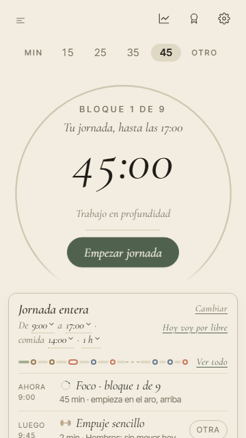<figcaption><b>Antes</b> · 36 px de más</figcaption></figure>
        <figure class="bien">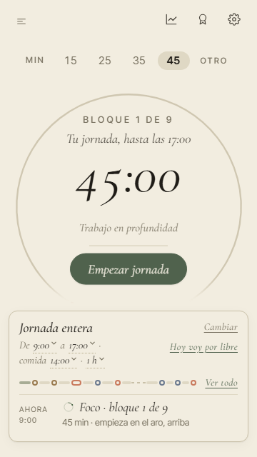<figcaption><b>Ahora</b> · cabe</figcaption></figure>
      </div></div>
    <div class="bloque"><div class="t">360 × 640 · inglés · letra al 115 %</div>
      <div class="par">
        <figure class="mal">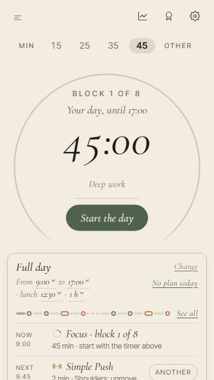<figcaption><b>Antes</b> · 35 px de más</figcaption></figure>
        <figure class="bien">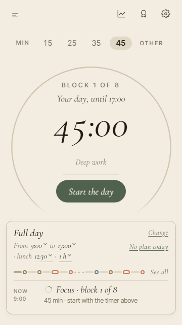<figcaption><b>Ahora</b> · cabe</figcaption></figure>
      </div></div>
    <div class="bloque"><div class="t">375 × 667 · español · letra al 115 %</div>
      <div class="par">
        <figure class="mal">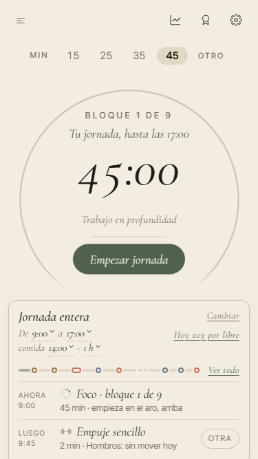<figcaption><b>Antes</b> · 20 px de más</figcaption></figure>
        <figure class="bien">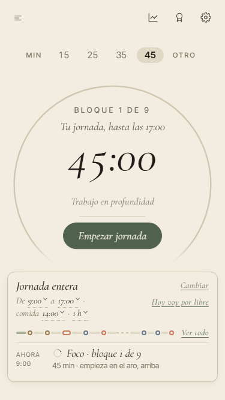<figcaption><b>Ahora</b> · cabe</figcaption></figure>
      </div></div>
    <div class="bloque"><div class="t">375 × 667 · inglés · letra al 115 %</div>
      <div class="par">
        <figure class="mal">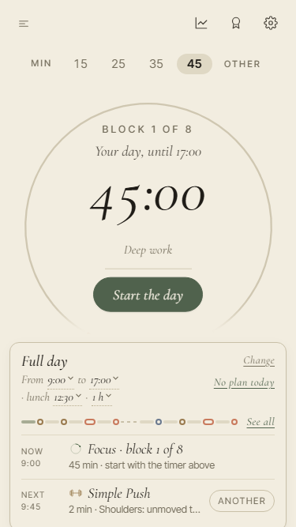<figcaption><b>Antes</b> · 16 px de más</figcaption></figure>
        <figure class="bien">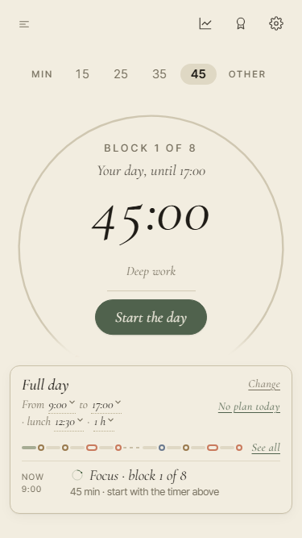<figcaption><b>Ahora</b> · cabe</figcaption></figure>
      </div></div>
  </div>
  <p>Lo mismo con la pausa abierta: pedía 38 px y ahora cabe.</p>

  <h3>Cómo sabe PACE que no cabe</h3>
  <ul>
    <li><strong>Lo mide, no lo adivina.</strong> PACE no pregunta al móvil a qué tamaño tienes la letra: mira si la home cabe con el aro ya en su tamaño más pequeño. Si no cabe, prueba sin «Luego», y solo lo guarda si así cabe. Si tampoco cabría, lo deja como estaba.</li>
    <li><strong>No parpadea.</strong> Decide antes de pintar la pantalla, así que nunca ves «Luego» aparecer y desaparecer. Una prueba mira cada fotograma al elegir el día.</li>
    <li><strong>No baila.</strong> La respuesta depende solo de lo que hay en pantalla, y sale igual cada vez.</li>
    <li><strong>El lector de pantalla tampoco la lee</strong>, y el tabulador no se para en ella: está guardada, no tapada.</li>
  </ul>
  <p><strong>Lo que no se puede comprobar sin un móvil de verdad.</strong> Aquí la letra grande se imita agrandando un 15 % cada texto de la home. Por lo que se sabe de Android, el móvil hace algo muy parecido: agranda la letra y deja igual el resto. Pero si un Android concreto la agranda de otra manera, se verá solo en ese móvil. Basta con abrir PACE en tu móvil con la letra grande y mirar la home con el día servido.</p>

  <h2>Los momentos sin «Luego»</h2>
  <p>Hay tres momentos de la home que con la letra al 115 % siguen sin caber y no tienen «Luego» que guardar: la tarjeta corta («¿Cuánto trabajas hoy?»), el día ya contestado («Hoy, como cada jueves») y la pregunta del día en inglés. Se miden en cada pasada de pruebas y tienen un tope: si crecen, sale rojo. Para los dos primeros hay dos maneras de recoger sitio.</p>

  <div class="pregunta">
    <p><strong>¿Qué se recoge en la tarjeta corta y en el día contestado cuando no cabe?</strong></p>
    <p><strong>A.</strong> La línea de puntos de la tarjeta. Es el dibujo del día; el día se sigue viendo al prepararlo. Cabe en español, pero en inglés a 360 × 640 siguen sobrando 31 px.</p>
    <p><strong>B.</strong> Las cuatro actividades en una sola fila, solo con su dibujo. El nombre lo sigue diciendo el lector de pantalla. Cabe en todo: los dos idiomas y las dos pantallas.</p>
    <p class="rec">Recomiendo la B: es la única que deja la home sin scroll en todos los casos, y los cuatro dibujos son los mismos que ves en el resto de PACE.</p>
  </div>

  <div class="bloque"><div class="t">Tarjeta corta · inglés · 360 × 640 · letra al 115 %</div>
    <div class="fotos tres">
      <figure class="mal">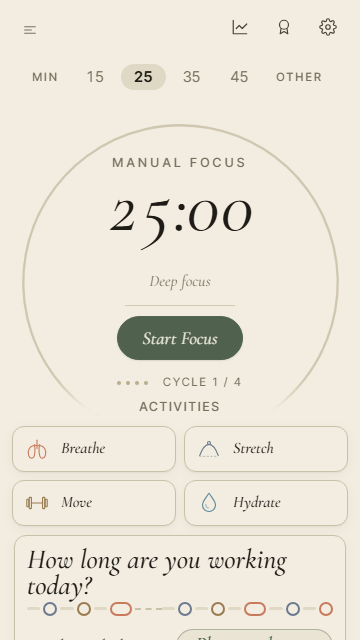<figcaption><b>Hoy</b> · 49 px de más</figcaption></figure>
      <figure class="mal">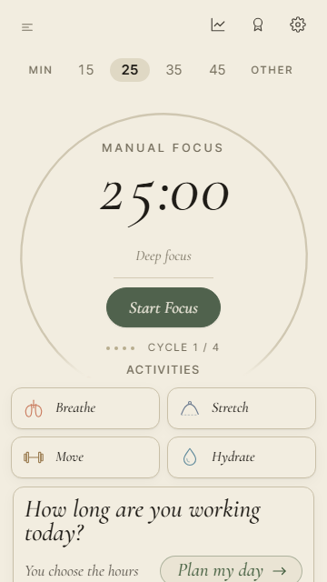<figcaption><b>A</b> · sobran 31 px</figcaption></figure>
      <figure class="bien">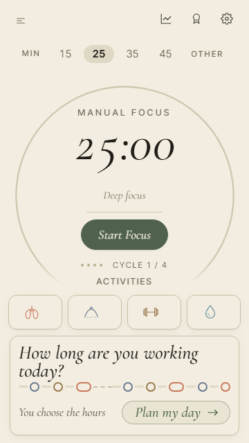<figcaption><b>B</b> · cabe</figcaption></figure>
    </div></div>
  <div class="bloque" style="margin-top:14px"><div class="t">Tarjeta corta · español · 360 × 640 · letra al 115 %</div>
    <div class="fotos tres">
      <figure class="mal">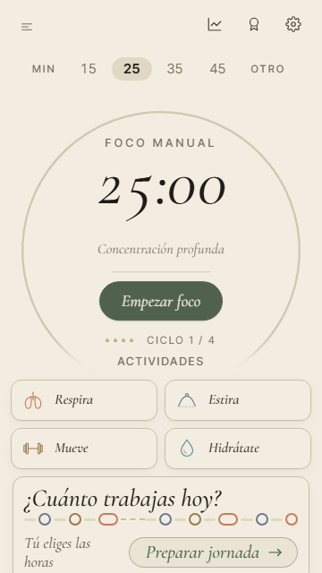<figcaption><b>Hoy</b> · 21 px de más</figcaption></figure>
      <figure class="bien">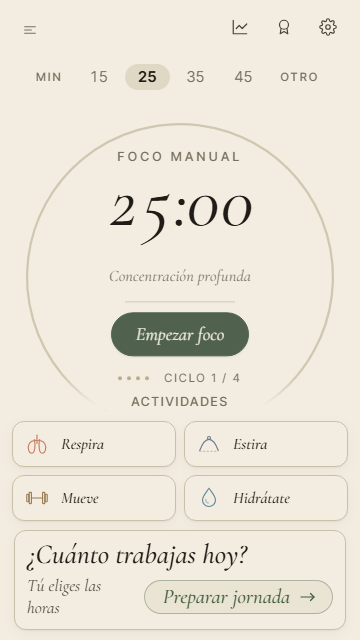<figcaption><b>A</b> · cabe</figcaption></figure>
      <figure class="bien">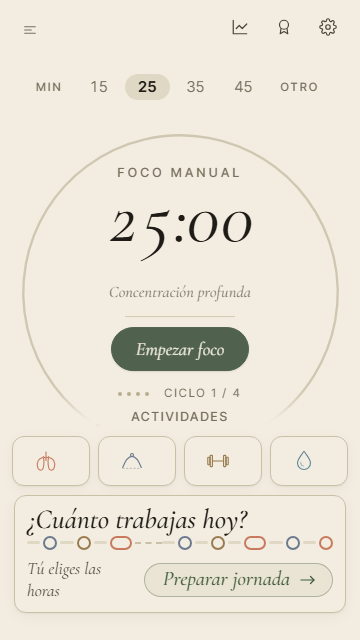<figcaption><b>B</b> · cabe</figcaption></figure>
    </div></div>
  <div class="bloque" style="margin-top:14px"><div class="t">El día ya contestado · español · 360 × 640 · letra al 115 %</div>
    <div class="fotos tres">
      <figure class="mal">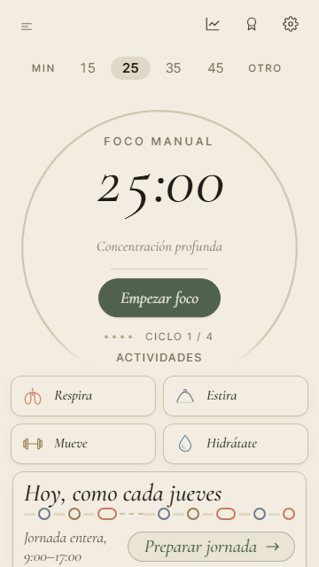<figcaption><b>Hoy</b> · 21 px de más</figcaption></figure>
      <figure class="bien">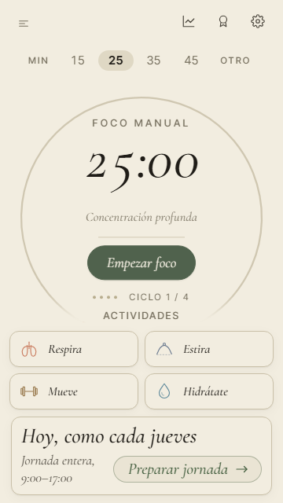<figcaption><b>A</b> · cabe</figcaption></figure>
      <figure class="bien">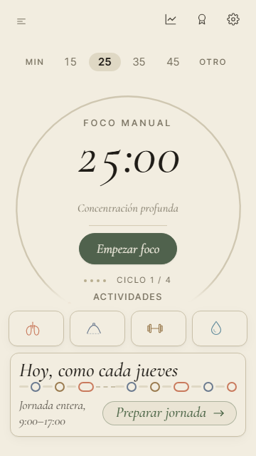<figcaption><b>B</b> · cabe</figcaption></figure>
    </div></div>

  <div class="pregunta">
    <p><strong>La pregunta del día, en inglés a 360 × 640, pide 17 px con la letra al 115 %.</strong> Ahí no hay actividades ni línea de puntos que recoger: son las cuatro opciones del día. Ni A ni B la arreglan.</p>
    <p class="rec">Propongo dejarla medida, con su tope, y mirarla aparte si te molesta en el móvil.</p>
  </div>
  <figure style="max-width:240px">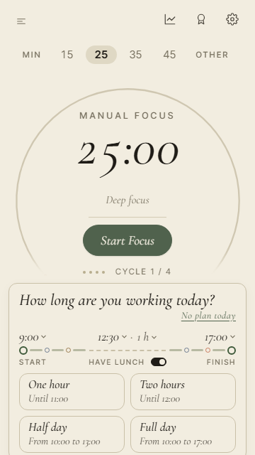<figcaption>La pregunta en inglés, hoy · 17 px de más</figcaption></figure>

  <h2>Las pasadas de noche</h2>
  <p>GitHub cuenta la hora en el meridiano de Greenwich y no cambia de hora en verano. Con dos pasadas, en verano las dos caían después de las doce y nada probaba el rato de antes. Con la tercera, todo el año hay una antes y otra después de la medianoche de Madrid.</p>
  <div class="tabla"><table>
    <thead><tr><th>Pasada</th><th>Invierno (Madrid)</th><th>Verano (Madrid)</th></tr></thead>
    <tbody>
      <tr><td class="nueva">La nueva</td><td class="n nueva">22:30</td><td class="n nueva">23:30</td></tr>
      <tr><td class="antes">Ya estaba</td><td class="n">23:30</td><td class="n">00:30</td></tr>
      <tr><td class="antes">Ya estaba</td><td class="n">00:30</td><td class="n">01:30</td></tr>
      <tr><td class="antes">Lunes</td><td class="n">08:00</td><td class="n">09:00</td></tr>
    </tbody>
  </table></div>
  <p>La revisión automática comprueba las dos estaciones: si alguien quita una pasada y falta el «antes» o el «después» en invierno o en verano, sale rojo. La página de ayer decía las horas de verano al revés: estas son las buenas.</p>

  <h2>Pruebas montadas</h2>
  <p>Cada una se ha visto fallar a propósito con el fallo que vigila, para saber que de verdad lo caza.</p>
  <div class="tabla"><table>
    <thead><tr><th>Qué vigila</th><th>Se ha visto fallar si…</th></tr></thead>
    <tbody>
      <tr><td>La home sin scroll, ahora también con la letra al 115 % (dos idiomas, cuatro pantallas, siete momentos)</td><td>«Luego» no se guarda: de 10 a 51 px de más</td></tr>
      <tr><td>«Luego» se guarda sin verse, sin bailar y sin foco</td><td>se decide un fotograma tarde: un fotograma lo pinta</td></tr>
      <tr><td>Con la letra normal la home no guarda nada</td><td>(lo mira la misma prueba en cada momento)</td></tr>
      <tr><td>Pasadas de noche antes y después de las doce, invierno y verano</td><td>se quita la nueva: «en verano no hay pasada antes de las doce»</td></tr>
      <tr><td>Ninguna prueba se salta en silencio (nada de «saltar» ni «solo esta»)</td><td>se marca una prueba para saltarla</td></tr>
      <tr><td>El número de pruebas no baja sin decirlo (mínimo 1526, solo sube)</td><td>(se mira en cada revisión)</td></tr>
      <tr><td>Ningún archivo de llave de Apple, de Android o de firma en el repositorio</td><td>se deja un archivo de llave de Apple en la carpeta del iPhone</td></tr>
      <tr><td>Un martes no sale la línea de los lunes, mirando cuando ya habría salido</td><td>la prueba del martes corre en lunes</td></tr>
    </tbody>
  </table></div>

  <h2>Lo que queda</h2>
  <ul>
    <li><span class="v falta">espera tu elección</span> A o B para la tarjeta corta y el día contestado con la letra grande.</li>
    <li><span class="v falta">en tu móvil</span> abrir PACE con la letra grande y mirar la home con el día servido.</li>
    <li><span class="v falta">sin montar</span> Siete pruebas de la octava: almacenamiento lleno en todo, exportar e importar una cuenta llena, la web tal como se publica, la landing al cambiar tamaño e idioma, la home un lunes con avisos, horas de noche en América y Asia, y los botones de compra con la compra hecha. La de las copias antiguas no se monta: el fallo que vigilaba no existía.</li>
    <li><span class="v falta">sin arreglar</span> Doce avisos pequeños de la red de pruebas (esperas fijas, la revisión de la web y de la privacidad, tres pruebas que miraban poco). Están apuntados con su sitio para la sesión siguiente.</li>
  </ul>
</main>
